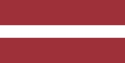

Estonia
Estonia, officially the Republic of Estonia (Estonian: Eesti Vabariik),
is a country on the eastern coast of the Baltic Sea in Northern Europe.
It is bordered to the north by the Gulf of Finland across from Finland,
to the west by the Baltic Sea across from Sweden,
to the south by Latvia, and to the east by Lake Peipus and Russia.
Estonia in Wikipedia
Latvia

Latvia, officially known as the Republic of Latvia (Latvian: Latvijas Republika),
is a country in the Baltic region of Northern Europe.
Since Latvia's independence in 1918, it has been referred to as one of the Baltic states.
It is bordered by Estonia to the north, Lithuania to the south, Russia to the east,
Belarus to the southeast, and shares a maritime border with Sweden to the west.
Latvia in Wikipedia
Lithuania

Lithuania, is a country in the Baltic region of Europe. Lithuania is one of the Baltic states.
Situated on the eastern shore of the Baltic Sea, to the southeast of Sweden and to the east of Denmark,
Lithuania is bordered by Latvia to the north, Belarus to the east and south,
Poland to the south, and Kaliningrad Oblast (a Russian exclave) to the southwest.
Lithuania in Wikipedia